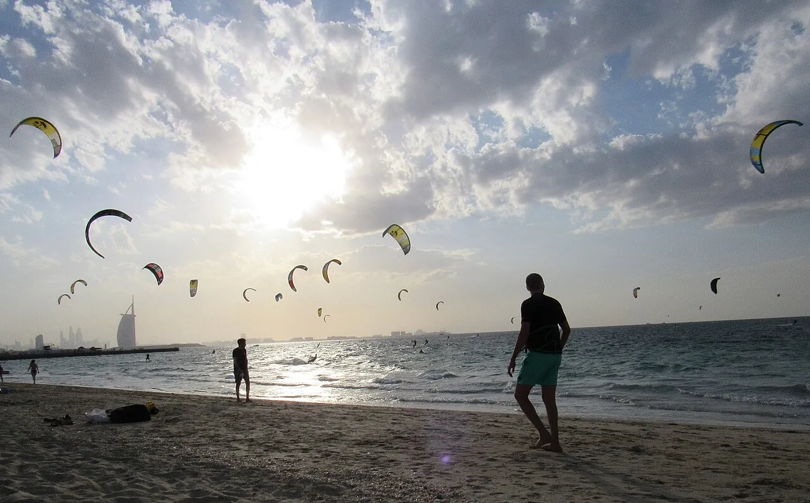

Kite Beach
Sal, Cap-Vert · kitesurf, windsurf

Plage exposée aux alizés de l’Atlantique, à l’est de Santa Maria. Un spot de vent régulier de novembre à mai.
- Lieu
- Sal, Cap-Vert
- Niveau
- Intermédiaire
- Activités
- kitesurf, windsurf
- Type d'eau
- Mer / océan
- Coordonnées
- 16.60, -22.90 (position approximative du secteur)
Dangers à connaître
- Alizés forts.
- Houle et courants au large.
Le conseil d'Ocean Buddy
Navigue avec un bateau de sécurité ou en groupe : le vent souffle parallèle et vers le large.
Ouvrir dans Ocean Buddy Télécharger sur l'App Store
Source : Fiche Ocean Buddy · septembre 2026 · à vérifier localement.